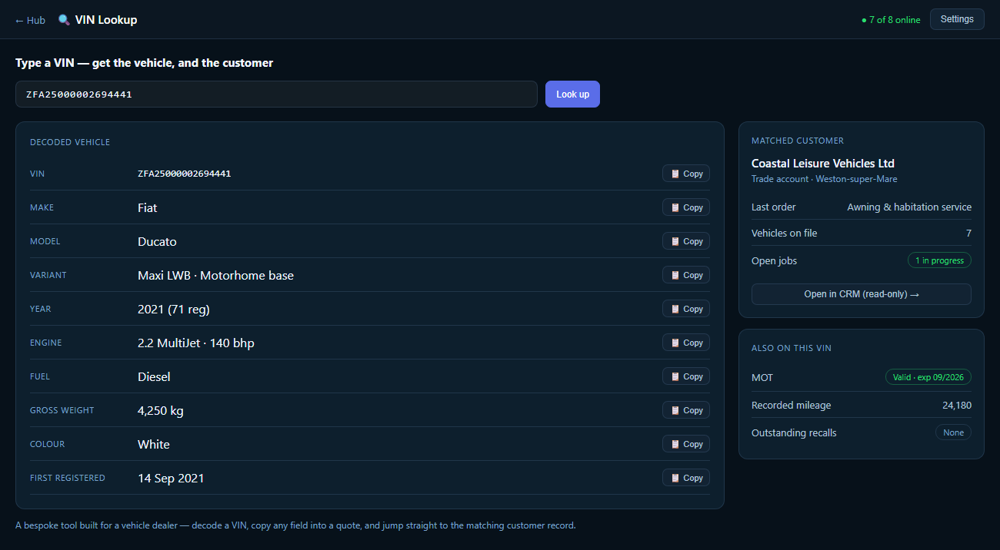
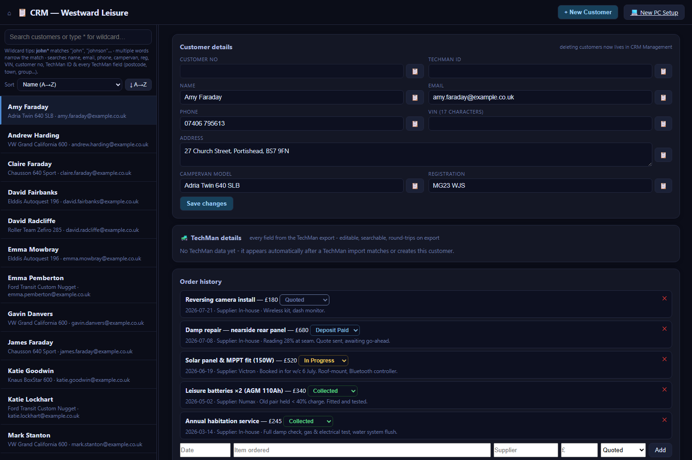
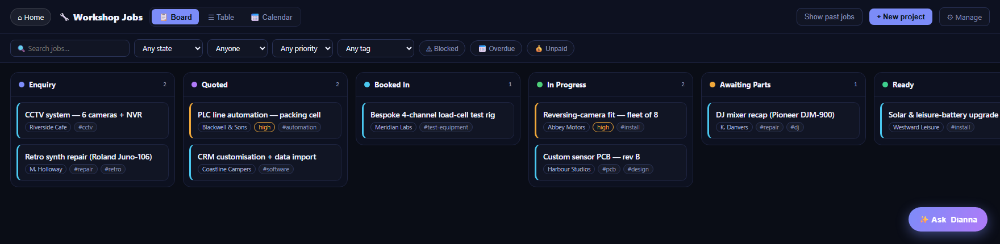
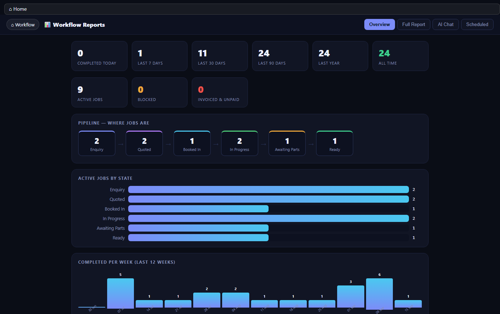
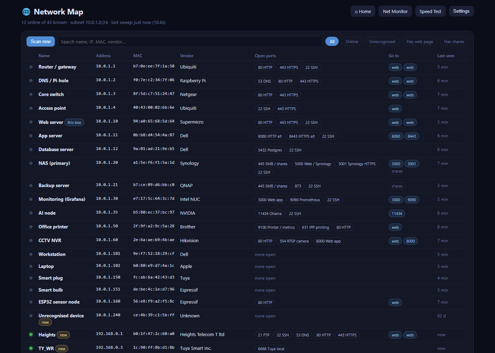
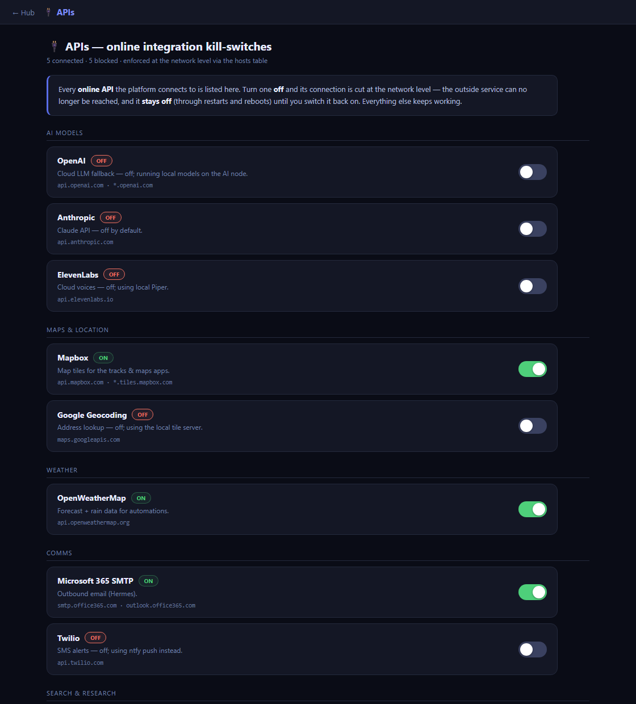
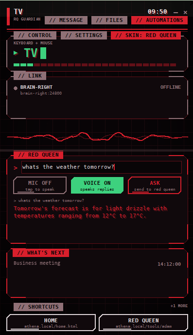

Updates & upgrades
New features and fixes, tested before they reach your live system.
// optional care
We design and build the software your business actually needs — bespoke, on hardware you own. Where a head start helps, we bring Athena, our self-hosted management suite. You own all of it: no cloud lock-in, no per-seat fees, no data leaving the building.
Off-the-shelf tools make you bend to fit them. We do the opposite — engineer the exact tool for the job, on your own server, shaped to your process. Some clients start from a blank page; others bolt a module onto the suite below.
A module for a process no off-the-shelf tool understands, an integration into the systems you already run, a screen shaped to the job in front of a member of staff. Designed with you, hosted alongside the rest of your system, and behaving like one product rather than a bolt-on.

A real example — a VIN lookup we built for a vehicle dealer: type a VIN, get the vehicle, copy any field into a quote, and jump to the matching customer record.
You don't always need to start from a blank page. Athena is our self-hosted business suite — CRM, workflow, enquiries, reports, documents and a private AI — adopted as-is, then bent to fit. One joined-up system where a customer, a job, an enquiry and a document are the same record, on a machine you control.
One shared record for every client and contact.
Jobs move through states on a board everyone can see.
New leads land as real records, not lost emails.
Live dashboards and scheduled summaries by email.
Files and paperwork attached to the right account.
A private AI that actually knows the business.
Procedures and guides in one searchable place.
Each part is useful on its own — and far more useful together, because they share one set of customers, jobs and documents.
A single, complete record for every client: contact details, the full history of orders and jobs, notes from your team, and every document filed against the account. A private AI assistant sits alongside it to answer questions — without any of that data leaving your server.

Track work the way your team pictures it: columns for each stage, cards you drag as a job progresses, and a clear read on what's in, waiting and done. Every card links back to its customer in the CRM, so the board and the account behind it are never out of step.

A new enquiry starts as an onboarding questionnaire that flows straight into the CRM as a proper customer — no re-typing, nothing lost. From there, live dashboards show how the business is doing, and scheduled reports land in your inbox on the days you choose.

It isn't just the apps — we keep an eye on the network and servers they run on, and put you in control of what's allowed to talk to the outside world.
Sweep the network and see everything on it — servers, workstations, cameras, printers, phones and IoT — each with its name, IP, vendor and open ports. Anything new is flagged the moment it appears, so an unrecognised device doesn't go unnoticed.

Every online service the platform can reach is listed with a single switch. Turn one off and it's blocked at the network level, and it stays off through restarts and reboots until you turn it back on. It's how a system that works offline stays honest about what it phones home to.

A KVM at heart — keyboard, video and mouse — but in software: take control of any PC on your network from a single window, move files between them, and keep the whole estate a keystroke away. The desktop companion to the hub, with Red Queen built in.
RQ Guardian is a KVM in software: pick any machine and you're driving its keyboard, screen and mouse as if you were sat in front of it — the office PC, the workshop box, a server in the cupboard. No extra hardware, no per-seat licence.

Every Guardian answers to a server-side Guardian on the hub. Change something once — a shortcut, theme, widget or config — and every desktop picks it up on its own. The same channel carries over-the-air firmware updates out to devices in the field: the server publishes, each node checks in, downloads and flashes itself, so a fleet stays current without anyone touching them.
Red Queen is the AI at the heart of the suite — and it's yours. Running on your server, it reads across the CRM, job boards, enquiries and documents to answer real questions: who a customer is, where a job stands, what's changed this week, which paperwork is missing. It drafts, summarises and looks things up in plain language.
Nothing is sent to a third party to make that work — no external account holding your customer list, no usage meter, no vendor reading your files. Private business intelligence that stays inside the walls.
Four questions in one breath — the time, who's nearby, tomorrow's weather, your top post — each answered from your own data, in her own voice, on the box in the building. Tap the video for sound.
Your customers, jobs and documents stay on your own hardware — nothing harvested to train someone else's model.
No CMS to rent, no database licence, no vendor who can switch you off — if we parted ways, it keeps running.
Add staff without the bill climbing — priced on the work, not on how many people log in.
Self-hosted near you, reachable across your network — and it carries on working whether or not the internet does.
Buy the software and you own it — it runs on your own hardware and keeps working whether or not we're still in the picture. You never have to pay us another penny. But if you'd rather not think about the housekeeping, we can look after any part of it — pick only what you want.
New features and fixes, tested before they reach your live system.
Backups set up, watched and test-restored, so they're there the day you need them.
We watch the box and step in before a niggle turns into a stopped business.
A second copy kept off the premises — cover for fire, theft or flood.
A person who already knows your setup, on the end of the phone when you need them.
Take one, several or none — bundle them into a simple monthly care plan, cancellable whenever. Or keep the lot in-house: we'll show your team exactly how it runs.
Based near Aztec West in Bristol, we design, build and host the whole thing. Tell us how your business works and we'll shape Athena — and the bespoke pieces around it — to fit. You'll own the result.
Start a project →